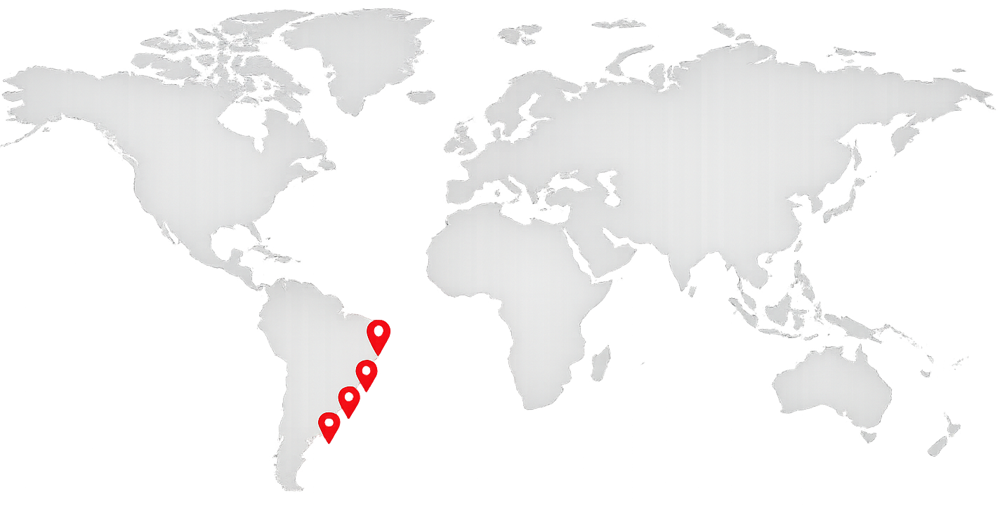
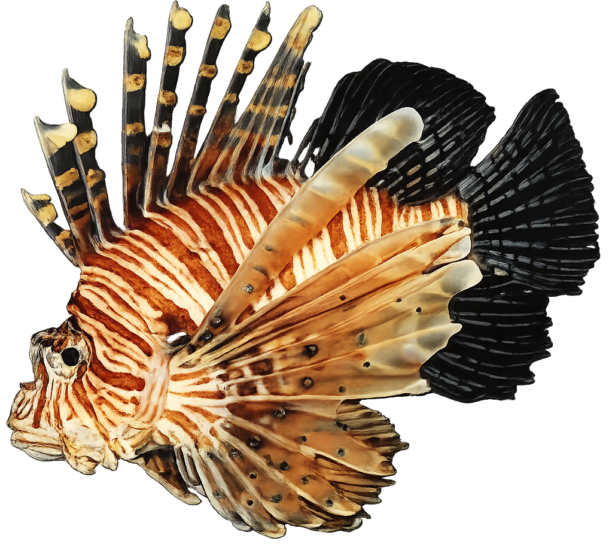

Por que caçar o peixe leão?
O peixe-leão é uma espécie invasora que vem causando grandes impactos nos ecossistemas marinhos do Brasil. Originário do Oceano Indo-Pacífico, ele chegou ao litoral brasileiro sem predadores naturais suficientes para controlar sua população, o que permitiu sua rápida expansão.
O peixe-leão se alimenta de diversos peixes pequenos, camarões e outros organismos marinhos. Como ele caça de forma muito eficiente e se reproduz rapidamente, acaba reduzindo a população de espécies nativas importantes para o equilíbrio dos recifes.
Além disso, muitos desses peixes consumidos pelo peixe-leão têm papel fundamental no controle de algas e na manutenção da saúde dos corais. Com menos espécies nativas nos recifes, o ambiente marinho fica desequilibrado e mais vulnerável à degradação.
A presença do peixe-leão também afeta pescadores e comunidades costeiras. A diminuição de espécies nativas pode prejudicar a pesca artesanal e reduzir a biodiversidade marinha, impactando diretamente a economia local e o turismo ecológico.
Outro problema é que o peixe-leão compete por alimento e espaço com peixes brasileiros, dificultando ainda mais a sobrevivência das espécies locais.
Atualmente, a captura controlada do peixe-leão é uma das formas mais eficazes de reduzir sua população. Como ele não possui muitos predadores naturais no Brasil, a ação humana se tornou essencial para evitar que a espécie continue se espalhando.
A caça é realizada principalmente por mergulhadores treinados e autorizados, seguindo normas ambientais e de segurança, já que o peixe-leão possui espinhos venenosos.
Apesar de venenoso nos espinhos, o peixe-leão possui carne própria para consumo quando preparado corretamente. Em algumas regiões, incentivar o consumo do peixe-leão tem ajudado no controle da espécie e criado uma alternativa sustentável para pescadores e restaurantes.
O combate ao peixe-leão é uma medida importante para proteger os ecossistemas marinhos brasileiros, preservar a biodiversidade e garantir o equilíbrio da vida nos oceanos. Informar a população e apoiar ações de controle são passos fundamentais para reduzir os impactos dessa espécie invasora na costa do Brasil.